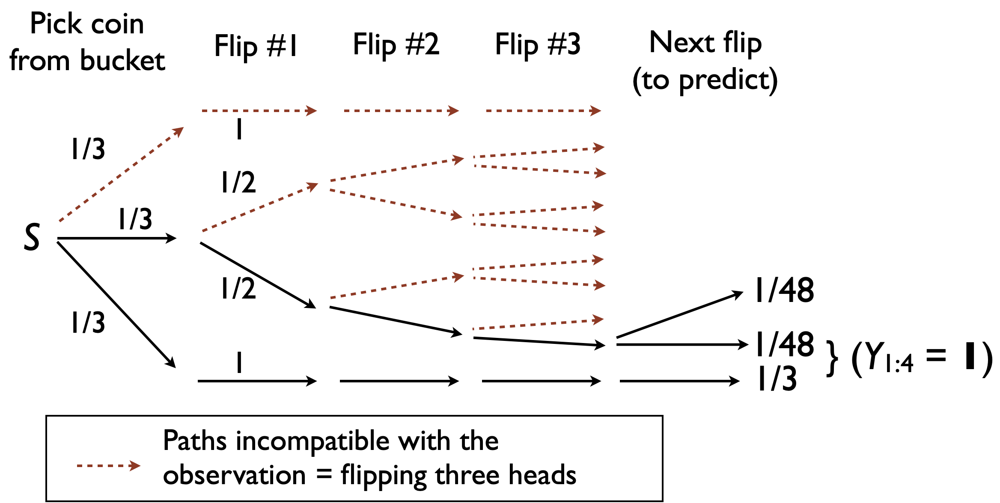

Prediction
Outline
Topics
- Prediction using decision trees
- Example
Rationale
Often we do not care so much about “parameters” but instead about predicting future observations.
Example: coins in a bag
Consider the setup from last week with 3 coins and 3 flips with \(Y = (1, 1, 1)\) (in the following, let \(\boldsymbol{1}\) denote a vector of 1’s).
Question: given you have see 3 heads, what is the probability that the next one is also heads?
Mathematically: \(\mathbb{P}(Y_4 = 1 | Y_{1:3} = \boldsymbol{1})\). This is known as “prediction”.
General approach
Key message: In Bayesian statistics, prediction and parameter estimation are treated in the exact same way!
Idea: Add \(Y_4\) to the unobserved random variables, i.e. set \(\tilde X = (X, Y_4)\).
Then, to compute \(\mathbb{P}(Y_4 = 1 | Y_{1:3} = \boldsymbol{1})\) use same techniques as last week (decision tree, chain rule, axioms of probability).
Example, continued
Use the following picture to help you computing \(\mathbb{P}(Y_4 = 1 | Y_{1:3} = \boldsymbol{1})\).

Poll: compute the predictive
- \(\approx 0.11\)
- \(\approx 0.35\)
- \(\approx 0.52\)
- \(\approx 0.94\)
- None of the above
- Add a random variable for the quantity you want to predict (next flip \(Y_4\)).
- Add one level in the decision tree.
- Use Bayes rule.
- Twist: distinct paths are compatible with observations and lead to the same prediction: \((Y_{1:4} = \boldsymbol{1}) = (X = 2, Y_{1:4} = \boldsymbol{1}) \cup (X = 1, Y_{1:4} = \boldsymbol{1})\).
- Sum the probabilities of the paths leading to the same prediction (why can we do this?).
- Let \(\gamma(i) = \mathbb{P}(Y_{1:3} = \boldsymbol{1}, Y_4 = i)\).
- Two ways to get \((Y_{1:4} = \boldsymbol{1})\), hence: \(\gamma(1) = 1/48 + 1/3\)
- Only one way to get \((Y_{1:3} = \boldsymbol{1}, Y_4 = 0)\): \(\gamma(0) = 1/48\)
- As before, normalize \(\gamma\) to get \(\pi\): \[\mathbb{P}(Y_4 = 1|Y_{1:3} = \boldsymbol{1}) = \frac{\gamma(1)}{\gamma(0) + \gamma(1)} = 17/18 \approx 0.94\]
Mathematical details of the above intuitive explanation:
By definition of conditioning: \[\pi(i) := \mathbb{P}(Y_4 = i | Y_{1:3} = \boldsymbol{1}) = \frac{\mathbb{P}(Y_{1:3} = \boldsymbol{1}, Y_4 = i)}{\mathbb{P}(Y_{1:3} = \boldsymbol{1})} \propto \mathbb{P}(Y_{1:3} = \boldsymbol{1}, Y_4 = i) =: \gamma(i).\] Since \(\{(X = 0, Y_{1:3} = \boldsymbol{1}, Y_4 = i), (X = 1, Y_{1:3} = \boldsymbol{1}, Y_4 = i), (X = 2, Y_{1:3} = \boldsymbol{1}, Y_4 = i)\}\) is a partition of \((Y_{1:3} = \boldsymbol{1}, Y_4 = i)\), from the additivity axiom of probability, reviewed last week, we have: \[\gamma(i) = \mathbb{P}(Y_{1:3} = \boldsymbol{1}, Y_4 = i) = \sum_x \mathbb{P}(X = x, Y_{1:3} = \boldsymbol{1}, Y_4 = i). \tag{1}\] The above explains why we can “sum the paths leading to the same prediction.”
Next, to compute each term in Equation 1, we use chain rule (“multiplying the edge probabilities to find a path probability”): \[\mathbb{P}(X = x, Y_{1:3} = \boldsymbol{1}, Y_4 = i) = \mathbb{P}(X = x) \mathbb{P}(Y_1 = y_1 | X = x) \mathbb{P}(Y_2 = y_2 | X = x, Y_1 = y_1) \mathbb{P}(Y_3 = y_3 | X = x, Y_{1:2} = y_{1:2}) \mathbb{P}(Y_4 = y_4 | X = x, Y_{1:3} = y_{1:3}).\] Note that by conditional independence, these probabilities can be simplified, for example, \[\mathbb{P}(Y_2 = y_2 | X = x, Y_1 = y_1) = \mathbb{P}(Y_2 = y_2 | X = x),\] or in words: “once I know the kind of coin (\(X\)), knowing the first flips (\(Y_1\)) does not bring additional information on the second flip (\(Y_2\)).”
Doing this for each \(i\) in Equation 1:
- \(\gamma(0) = 0 + 1/48 + 0\)
- \(\gamma(1) = 0 + 1/48 + 1/3\).
Finally, we renormalize to get a posterior PMF \(\pi\): \[\pi = \frac{\gamma}{Z},\] i.e.: \[(\pi(0), \pi(1)) = \frac{(\gamma(0), \gamma(1))}{\gamma(0) + \gamma(1)}.\]